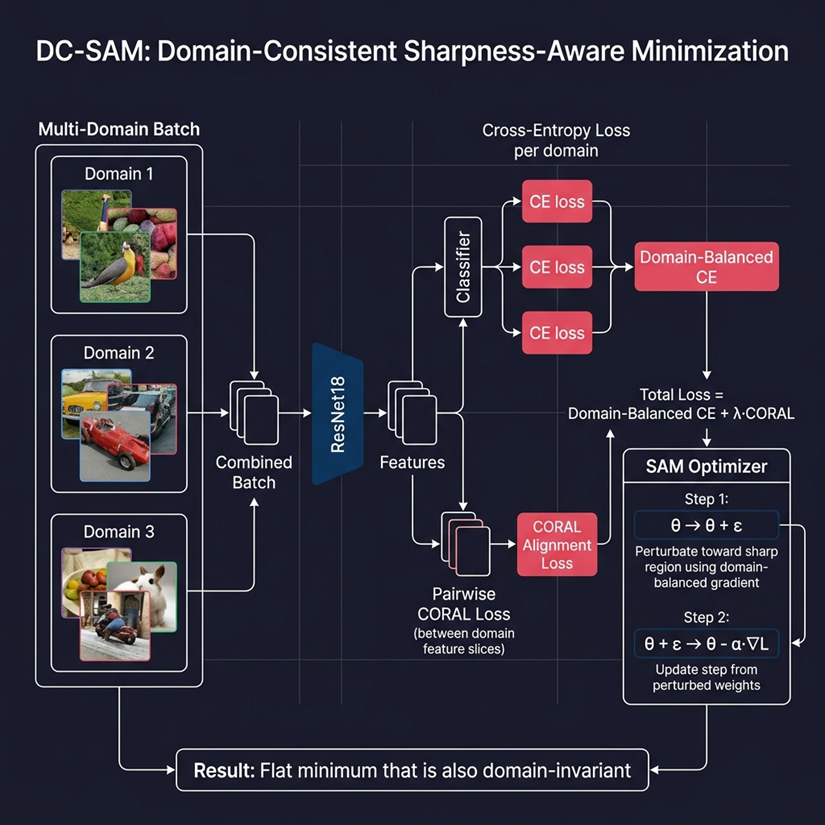

DC-SAMDomain-Consistent Sharpness-Aware Minimization
A model trained on photos, cartoons and paintings should still work on sketches it has never seen. DC-SAM trains toward minima that are flat and shared across domains: it balances the loss across training domains, aligns their feature statistics, and optimises with SAM.
Why flat minima travel better
A new domain shifts the loss surface a little. At a sharp minimum, a small shift means a big jump in loss. At a flat one, the loss barely moves. SAM looks for the flat kind by minimising the worst loss within a radius ρ.
- Sharp minimum
- 0.050.05
- Flat minimum
- 0.150.15
Loss on the training domains, then on the shifted domain. A conceptual sketch, not measured data.
Method
Plain SAM pools every domain into one gradient, so the domain with the highest loss decides which way the weights are perturbed. DC-SAM makes each domain count equally, and asks for features that look alike across domains at the perturbed weights too. It all happens in one shared forward pass per step.
L(θ) = 1D ∑d CEd(θ) + λ · CORAL(θ)
-
Domain-balanced cross-entropy
Each batch holds one minibatch per training domain. Cross-entropy is computed per domain from the shared logits and then averaged, so a hard domain can’t dominate the gradient that sets SAM’s perturbation.
-
CORAL feature alignment
For every pair of domains, the covariance matrices of their ResNet features are compared. The squared Frobenius distance, scaled by 4d², is averaged over pairs and weighted by λ = 0.1.
14d²‖Ci − Cj‖
-
Sharpness-aware update
Step 1 climbs to the worst nearby point, θ + ε with ε = ρ ∇L / ‖∇L‖. Step 2 takes the gradient there and applies it to the original weights. With SGD at momentum 0.9 and ρ = 0.05.

Results
Leave-one-domain-out accuracy: train on three domains, test on the fourth, repeat for each. Same ResNet-18 backbone and 5,000 steps for every method.
Accuracy in percent on the held-out domain, as reported in the repository README.
Setup
The comparison holds everything fixed except the training algorithm. ERM++ normally uses a ResNet-50 with AugMix; here it runs on the same ResNet-18 as the others.
- Backbone
- ResNet-18, ImageNet-pretrained
- Training steps
- 5,000 per held-out domain
- Optimiser
- SAM over SGD, momentum 0.9, learning rate 10−3
- SAM radius ρ
- 0.05
- CORAL weight λ
- 0.1
- Datasets
- PACS art painting, cartoon, photo, sketch
VLCS Caltech101, LabelMe, SUN09, VOC2007
Reproduce
Each script trains ERM, ERM++ and DC-SAM on all four held-out domains and prints a summary table. You’ll need PyTorch and torchvision with a GPU.
-
Install
git clone https://github.com/SparshSunilNaik/domain-bed.git cd domain-bed pip install torch torchvision pip install -r domainbed/requirements.txt -
Get the data
python download_pacs_hf.pyFetches PACS from Hugging Face into
./data/PACS. DomainBed’sdomainbed/scripts/download.pycovers VLCS and the other datasets. -
Run the comparisons
python run_fair_comparison.py python run_vlcs_comparison.pyAdd
--results-onlyto rebuild the summary from finished runs. -
Or train one model
python -m domainbed.scripts.train --data_dir ./data --dataset PACS --algorithm DCSAM --test_envs 3 --steps 5000 --hparams '{"resnet18": true, "resnet50_augmix": false, "rho": 0.05, "lambda_feat": 0.1, "lambda_var": 0.0, "sam_sgd": true, "sgd_lr": 0.001}'Test environment 3 is sketch.
Built on DomainBed
DC-SAM is implemented as one more algorithm inside DomainBed, the PyTorch suite from In Search of Lost Domain Generalization (Gulrajani and Lopez-Paz, 2020). Its datasets, training loop, model selection and 30-plus reference algorithms are used unchanged. DomainBed is released under the MIT license.